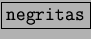
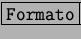

Next: Trabajar con tablas:
Up: El documento:
Previous: Guardar, guardar como:
Índice General
Como se ha comentado anteriormente el texto puede formatearse mientras se escribe
o una vez que se ha terminado la edición del documento. Si se quiere formatear
el texto mientras se escribe se activa la orden, por ejemplo activar ,
y una vez acabado se desactiva la opción. Para formatearlo una vez que terminado
hay que seleccionar el texto o la parte del texto que queramos modificar, para
señalarlo basta con colocar el puntero del ratón al comienzo del texto y pulsando
el botón derecho arrastrar el ratón hasta el final de la selección, tambien
se puede seleccionar mediante los cursores manteniendo la tecla de mayusculas
pulsada.
Para ver el documento en una escala mayor o menor se utiliza....Para cambiar
el tamaño y tipo de letra (una vez seleccionada) se pulsa ......y
aparecerá un cuadro de dialogo en el que se puede elegir el tamaño de la letra,
el tipo de fuente, Negrita, cursiva, etc. Una vez seleccionados los cambios
pulsamos  y se modificará el texto seleccionado. Para ver las marcas
del texto de principio o fin de párrafo, tabulaciones, sangrías, etc., se pulsa
en [Ver] y después se selecciona ......... (Caracteres no Imprimibles)
y se modificará el texto seleccionado. Para ver las marcas
del texto de principio o fin de párrafo, tabulaciones, sangrías, etc., se pulsa
en [Ver] y después se selecciona ......... (Caracteres no Imprimibles)
Next: Trabajar con tablas:
Up: El documento:
Previous: Guardar, guardar como:
Índice General
Proyecto Cursos - LuCAS - http://lucas.hispalinux.es/htmls/cursos.html